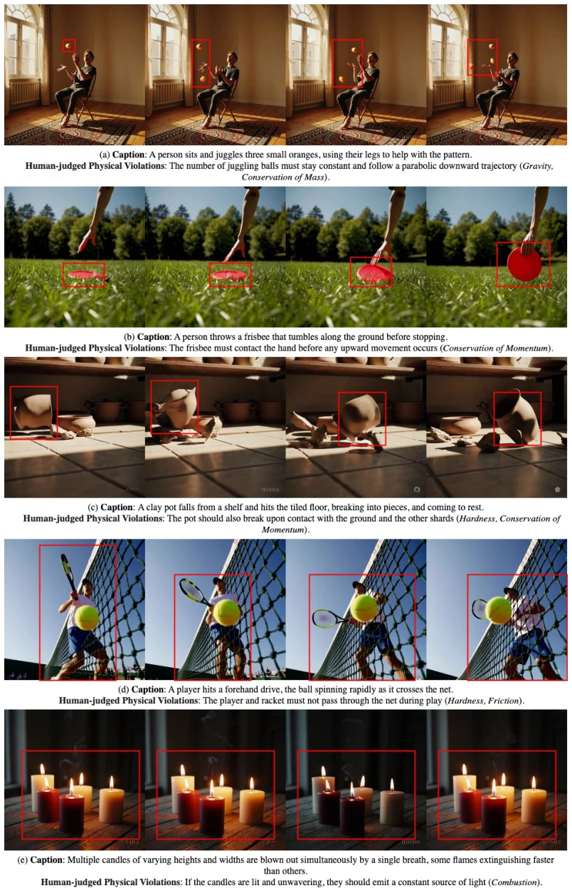
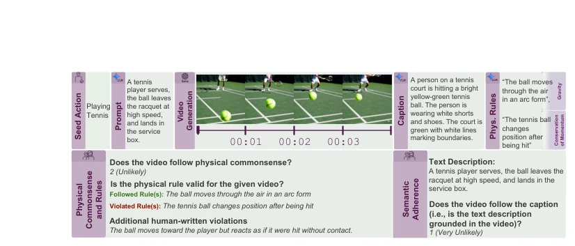
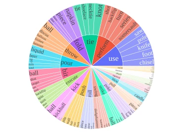
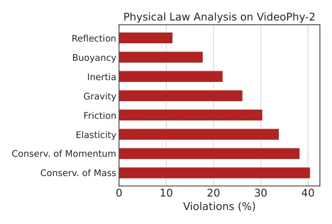
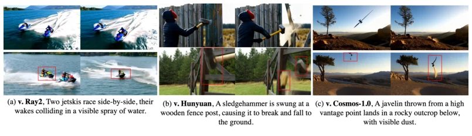
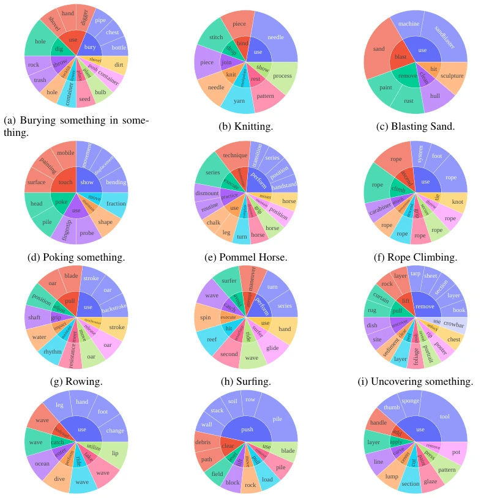
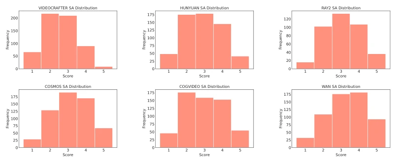
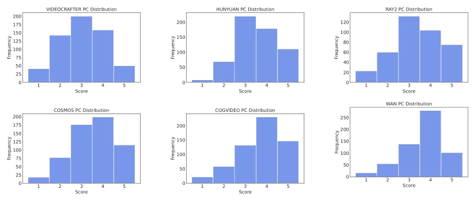
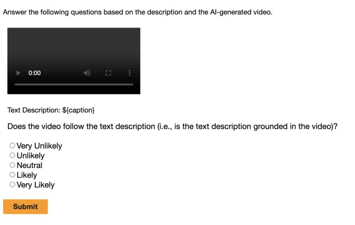
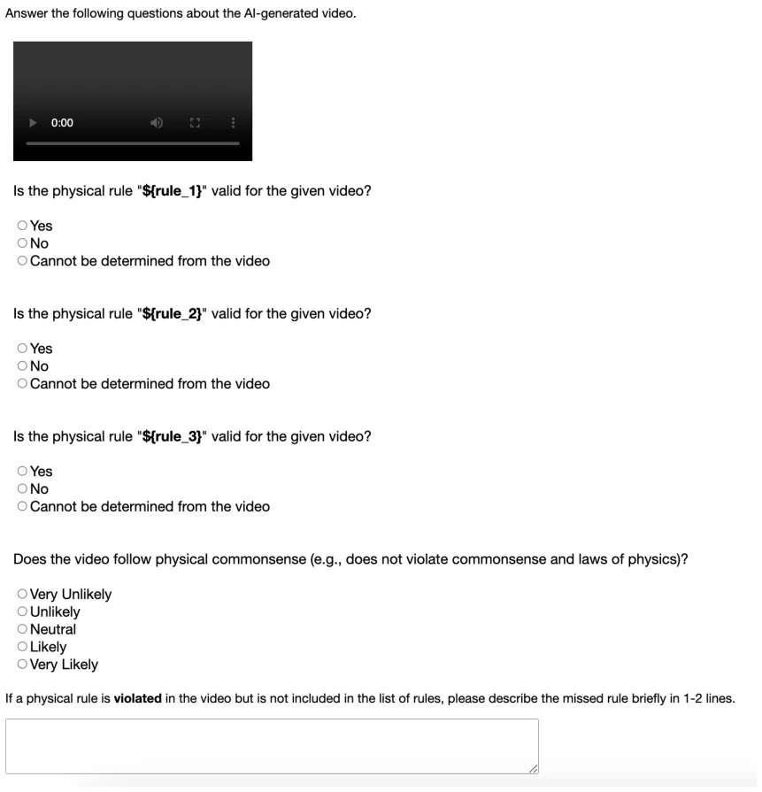

This paper pours cold water on the current frenzied video generation models. Although the industry often boasts that large models are "physical world simulators" [10], VideoPhy-2 proves with hard-core data that they cannot even handle basic physical common sense. The top model Wan2.1-14B has only 22% joint performance on hard cases, simply "physics novices". The highlight lies in constructing a fine-grained physical rule evaluation system, not only looking at likeness but also compliance with Newton's laws, especially momentum and mass conservation. The drawback is the extremely high cost of dataset construction, and although the auto-evaluator is stronger than Gemini, it is still far from perfect human evaluation. Overall, this is a necessary "demon-revealing mirror", reminding developers not to just compete on image quality, but to compete on physics engines, otherwise the so-called universal world simulation is just a castle in the air.
Existing video generation models are highly expected to serve as universal physical world simulators, but their adherence to physical common sense regarding real-world actions remains unclear. Existing benchmarks such as PhyGenBench [36] contain only a small number of manual prompts, and strongly bind prompts with physical laws, ignoring cases where models may not strictly follow prompts but conform to physical common sense, such as a stone entering water relying more on gravity than buoyancy. VideoPhy [5] focuses on material interaction but does not deeply analyze physical law violation details. In addition, existing methods lack large-scale human evaluation and suffer from sim-to-real gaps. This paper aims to fill these gaps by constructing an action-centric dataset, quantitatively evaluating the model's true capabilities in quality, semantic consistency, and physical rule adherence, revealing the fundamental defects of models as world simulators, and providing guidance for next-generation physics-grounded video generation.

Figure 2: Examples of physically unlikely video generations from Sora. Each case demonstrates violations of physical rules and their laws.
The method is divided into four stages to construct the dataset and evaluator. First, 197 seed actions involving physical activities are filtered, excluding static or abstract actions, ensuring coverage of motion and object interaction. Second, LLM (Gemini-2.0-Flash-Exp) is used to generate 3940 detailed prompts, extended into long descriptions to increase difficulty and avoid non-visual details. In the third stage, video descriptions are generated via VLM, then candidate physical rules are extracted, manually labeled and verified, and violation rules are supplemented, ensuring rules are based on video content rather than just text. A Hard Subset is specially designed, selecting 60 actions where CogVideoX-5B performed poorly, focusing on momentum transfer and state changes. Finally, based on 50,000 human labels, the VideoPhy-2-AutoEval auto-evaluator is trained, jointly optimizing semantic, common sense, and rule classification tasks. The entire process emphasizes the closed loop of "video generation - rule extraction - human verification", ensuring evaluation standards are close to real physical intuition rather than simple text matching, while providing an efficient auto-evaluation tool.

Figure 3: VIDEOPHY-2 pipeline. Top: We generate a text prompt from the seed action using an LLM, create a video with a text-to-video model, and caption it with a VLM to extract candidate physical rules. Bottom: Human annotators rate the video’s physical likelihood, verify rule violations, suggest missing rules, and assess semantic adherence to the input prompt.

Figure 4: Diversity of VIDEOPHY-2 prompts. Top- 20 frequently occurring verbs (inner) and their top-5 di- rect nouns (outer).
Experiments evaluated 7 mainstream models, including Wan2.1, Sora, Cosmos, etc. Metrics cover semantic adherence (SA), physical common sense (PC), and joint performance. Results show that even the best model Wan2.1-14B is only 32.6% on all data, dropping to 22% on the hard subset. Fine-grained analysis indicates that momentum and mass conservation law violation rates are highest, reaching 40%, while reflection and buoyancy are mastered better. The auto-evaluator performs excellently on unseen prompts and models, showing a 236% improvement over Gemini-2.0-Flash-Exp on physical common sense tasks. In addition, physical common sense has low correlation with aesthetics and motion quality metrics, proving that simply optimizing image quality cannot solve physical consistency issues. This further confirms the discriminative power of VideoPhy-2 as a benchmark, pointing out that future research needs to specifically optimize for physical common sense.

Figure 5: Physical laws violation analysis. We present the violation scores for diverse physical laws based on human annotations collected from various video generative models on VIDEOPHY-2.

Figure 6: Comparison of Wan2.1 with other models. The top row shows videos generated by Wan2.1: (a) For Ray2, the jetski on the left lags behind the other jetski and then starts moving backward. (b) For Hunyuan- 13B, the sledgehammer deforms after the swing, and a broken wooden board appears out of nowhere. (c) For Cosmos-7B, the javelin expels sand before it even hits the ground.
其他图片Other Figures

Figure 8: A subset of actions, and the verb-noun pairs in their respective generated prompts.

Figure 9: Distribution of semantic adherence scores for various models in VIDEOPHY-2.

Figure 10: Distribution of physical commonsense scores for various models in VIDEOPHY-2.

Figure 18: The screenshot of the human annotation interface for semantic adherence task.

Figure 19: The screenshot of the human annotation interface for physical rule and commonsense judgment tasks.